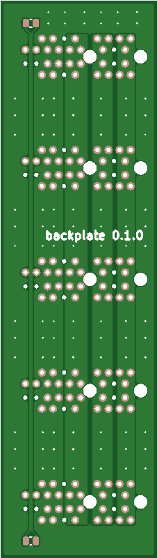
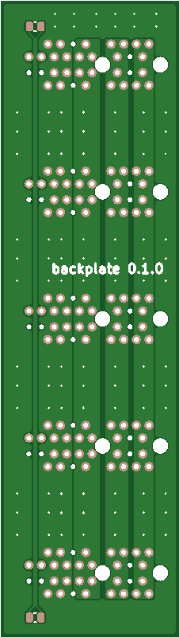
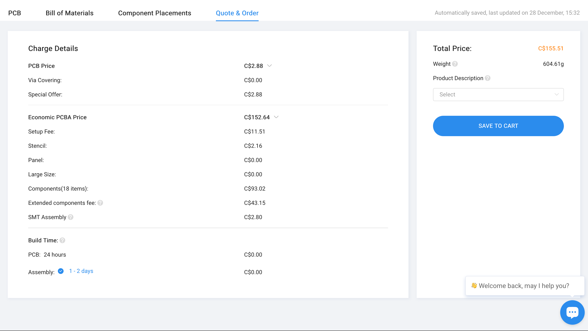

4" Avionics

Sensors, PowerSim and Backplate Arrive
It only took 7 days for the boards to arrive this time!
Lessons
Sensor Module
For a reason I still don't quite understand, the only cables that have been working for the data transmission are USB-C to USB-A. The USB-C to UCB-C cables don't. I though it had something to do with USB 2 vs 3 but I've tried a both 2 and 3 and they work.
Test points, silk screen labels and an LED or two on the next version. Not necessary, the board works fine right now but it's important for troubleshooting.
PowerSim
Only some power supplies work. Macbook port doesn't unless there's I use an adapter thing, and my 40W Anker wall adapter doesn't either, Alienware ports do work. The reason for this is due to protection circuits present on some power supplies.
The idea is they don't want a live wire lying around because it acts like an inductor and could potentially have high transient current. So if you have a very very small load, it will just shut off the power to the port to prevent that.
Backplate
I used 0805 resistors. I could have made them even bigger. Soldering all the PCIe pins is more annoying than it looks. I wish JLC assembled that.
Next Steps
I'll be testing out CAN bus soon. I have 4 sensor boards to test with. (I broke one during testing) If all goes well I'll start work on the power module.
The CAD and 3D printing for the enclosure needs to be finalized as well.
Automation
I've set up a GitHub actions shared workflow to automatically render schematics, footprint editor and 3D PCB images. All the pictures you see on the blog are automatically generated, and updated every time a commit is made.
I used these resources:
 
December 28
Here are two images of the final prices for PCBs
The more expensive one uses standard assembly, the less expensive one uses economic. I thought standard assembly would cost a lot more.
 At first I designed the PCB with a sensors that were only available with standard assembly. It cost $205 I was like that's a little much.
At first I designed the PCB with a sensors that were only available with standard assembly. It cost $205 I was like that's a little much.
 Then I redesigned it with all economic components. It turned out the feeders loading fee is the exact same for both because the standard fee is half of the economic fee and I had double the components.
So in the end it costs about $50 more to use much better sensors. That's only $10 a board. I think it's well worth it.
Rebranding
The site has officially been changed to Sonic Avionics. I choose this name because sonicavionics.com was available and it kinda rhymes. I changed dingboard's name to 4" Avionics. This is kind of sad, but we're gonna have to present to some committees and it wouldn't look good to have it called that. We lack credibility so a silly name would be seen as a negative thing. I promise to make the 6 inch avionics called dongboard.
One Month of PCBs
The power module 0.0.2 works perfectly.
Here's some photos of me testing it. I got heat shrink that's too big.


I even got the fuel gauge chip working.

A month into this project, and I got a working PCB! I'm happy about that. Not often it works on the first try either. It took 15 days for the PCBs to arrive and it cost $116.28 CAD for assembly for 5 boards including shipping and tax and everything.
Chip Selection
Here is the post outlining the reasons for picking the chips. This post will be updated in the future with reasons why or why not to pick these chips. Requirement for all chips was being available on JLC.
MCU
I went with the RP2040 because the alternatives are usually more complex or more expensive. The documentation on the rp2040 is great and there's a great online community around it. It's more than fast enough to accomplish what we need to do.
ESP chips get kind of expensive, although they have some kind of CAN and ethernet capability on board. When we do go ethernet it'll probably be an addition to the CAN bus though.
Flash
W25Q128JVP Didn't even read the data sheet. It's the one they use in the rp2040 hardware design guide, it's the most flash the rp2040 can use.
Crystal
ABM8-272-T3 In the rp2040 design guide.
USB-C
USB-C port Easy choice; pretty much only one on JLCPCB at the time
Power
3.3v Regulator
LMR51430YFDDCR Constant, 1kHz switching reg, wide voltage input range, goes to 3.3v, cheap
5v buck-boost
Power MUX
TPS2121RUXR Two inputs, one output cheap, on JLC. done. Using this in Highest Voltage Operation (VCOMP) mode with the battery as the main and USB as secondary
Sensors
IMU
Need IMU with accelerometer, gyroscope and magnetometer, high sample rate, some vibration resistance, onboard sensor fusion and on JLC.
BNO055, BNO055, BMX055, MPU-9250 are off the table because they need standard assembly. The options are: - MPU-6050 (only 6-axis) - ICM-20948 (9-axis with fusion)
So there's only the ICM-20948 if I wan't to do 9 axis.
Pressure
Need temperature and pressure and high sample rate.
Some JLC options for pressure sensors: - MS563702BA03-50 - GZP6816D - GZP131-701A - MS560702BA03-50 - HP203B - WF100SPZ 0.4BG S6 AT - MPXHZ6115AC6T1 - GZP170-701A - LWLP5001DD - MPS-3117-006GC-A3 - NSPAS1N115RR01
MS560702BA03-50 was chosen for high speed capabilities.
Payload Module
We might add a payload module with a bunch of different sensors and the "experiment" will be to see the discrepancies in their readings.
0201, 0402 or 0603?
Should I use 0603, 0402 or 0201? If I go with 0603 we can solder it pretty easily. 0201 its not happening, and 0402 is harder. Those components aren't even the expensive ones to have JLCPCB assemble for you. Actually 0201 is more expensive I think. Okay 0402 it is then.
Okay there's not that many JLC basic resistors so I'll use 0603 and hand solder those ones.
Conclusion
It's not a good idea to spend too long on chip selection, better to just start making shit and find out along the way. I'll probably regret some of these choices, but that is part of learning. Some chips I really didn't think that much about, if it does the job and is cheap enough I'll use it I don't need to compare it with every single alternative out there. Some chips like the sensors I compared a bunch of chips in the same range, and took inspiration from other teams and such. ChatGPT is great for suggesting chips, it currently gets the numbers wrong very often so you can't trust anything and have to read the data sheet yourself to confirm but it still makes it much much easier. Vibration wasn't too much a concern, most chips can withstand the vibration we'd put them through.
December 9th
Things I bought today:
- Test PCBs from JLC, module and backplate for the 4" Avionics
- 12 18650s
- spot welder and threaded heat inserts
- PCIe and UCB-C receptacles
Should I use 0603, 0402 or 0201? If I go with 0603 we can solder it pretty easily. 0201 its not happening, and 0402 it's harder. Those components aren't even the expensive ones to have JLCPCB assemble for you. Actually 0201 is more expensive I think. Okay 0402 it is then.
For the next board, we'll have a way to upload new code over the air. The CAN network will have its bootselect pins on the PCIe bus, the raspberry pi 5 or something will be able to put any of them into mass storage mode, and upload new code on the USB lines... maybe I should just do this now. okay fine i'll do it now
KiCAD vs Altium and Solidworks vs OnShape
Gotta pick which software to use. Most teams use KiCAD and Solidworks.
KiCad vs Altium
5 minutes into KiCAD. Here's the pros and cons of KiCAD. One downside already is no dark mode support on windows
Pros
- There seems to be a much better built in library. Well it has PCIe footprints.
- I don't have to sign in and click roam on the licenses all the time.
- There's a plentiful plugs ins repo.
- It's way way faster
- Dark mode for schematic editor.
- FOSS
- Altium's manufacturer part search is really not that fast, and for whatever reason the BOM is the slowest thing in the world. There's few companies that would use the build in supply chain shit, it just slow things down and I didn't see a way to disable it without disabling the manufacturer part search.
- Many different repos for all the manufactures design rules.
- Exporting is way faster with the JLCPCB plug in
- The measurement tool is slightly better
Cons
- The UI is somewhat less professional looking. (who cares)
- KiCAD doesn't have dark mode on windows. Altium's UI is dark by default, but I don't think you can add themes for the actual schematic editor. So that's
- Altium actually has better git integration surprisingly.
- You can only have one project open per instance.
open -n /Applications/KiCad/kicad.app - I've experienced more crashes than Altium. Running tally of crashes: 10
- Sometimes the footprints don't show up in the previewer windows when selecting a chip
Routing
Altium has much better routing. Dragging chips that already have traces around in Altium works much better than in KiCad.
Design Rules
The design rules manger is much better in Altium.
Solidworks vs OnShape
I'll do pros and cons of Solidworks
Pros
- Faster
- Realview graphics
- Can handle assembly as large as your computer will allow. OnShape is run in AWS. I didn't think this would be an issue, because they dynamically allocate compute based on your needs. Even still, it is really slow loading things, and I did notice that after a while it gets faster the more you use it, but still its much slower than Solidworks.
Cons
- Very old looking interface
- Have to update variable file reference manually every time you add a variable.
- No version control, although OnShape has it but doesn't use git.
- Mating in OnShape is faster, the same thing that takes one mate in OnShape takes 2 or 3 in Solidworks.
- Only runs on windows, OnShape is really great for how it runs in the browser. I would do almost anything to never have to use windows again, but onshape is just too slow.
- Very expensive for companies, onshape has a free tier for open source people.
- The workflow with Solidworks involves using sharepoint or something similar. The files will get too large for regular git so LFS will be needed.